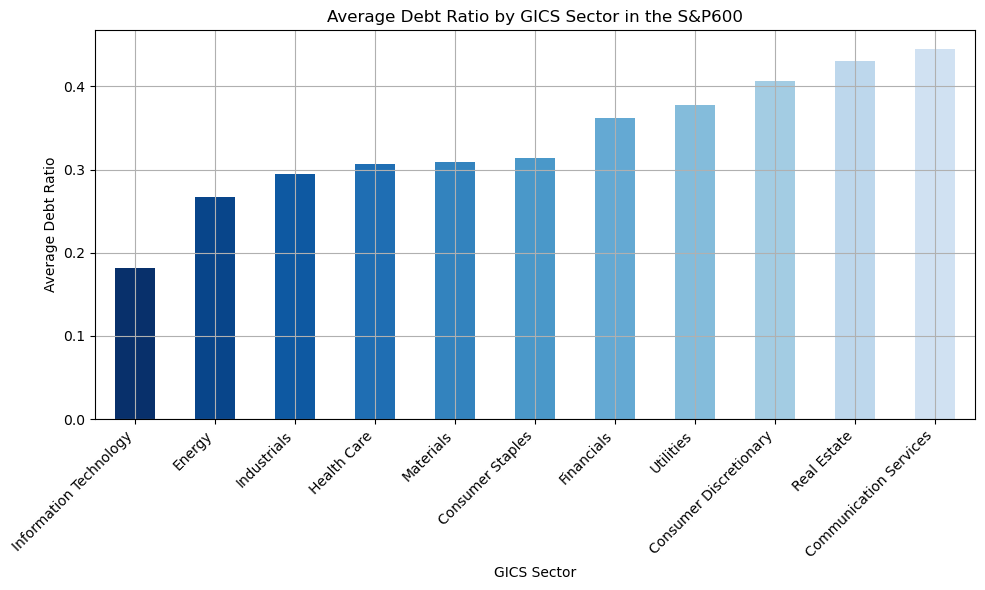
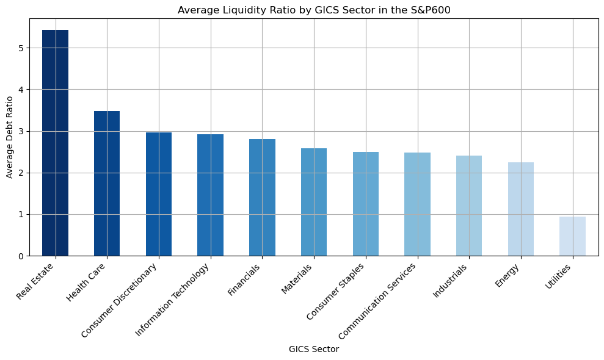
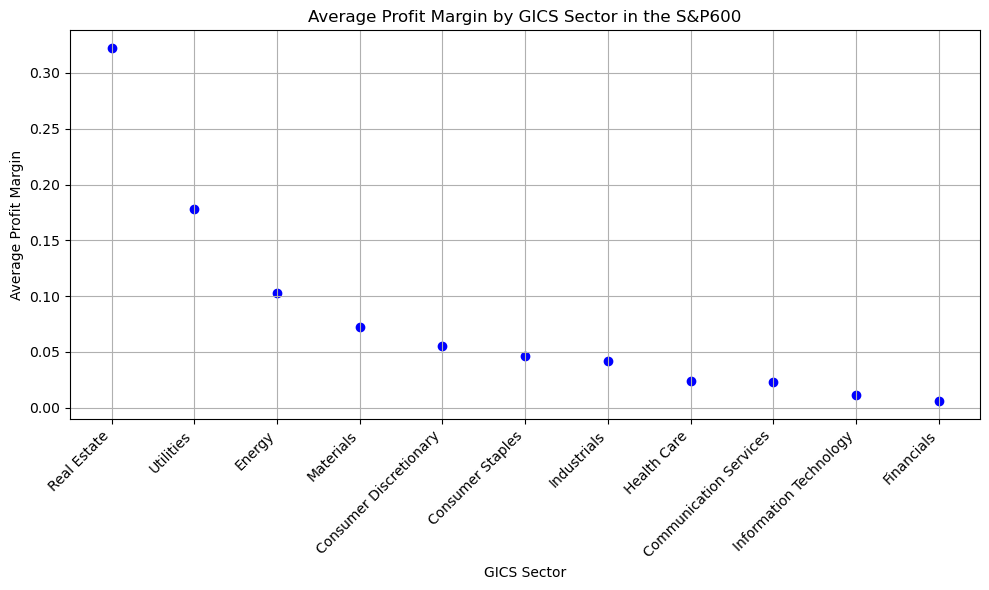
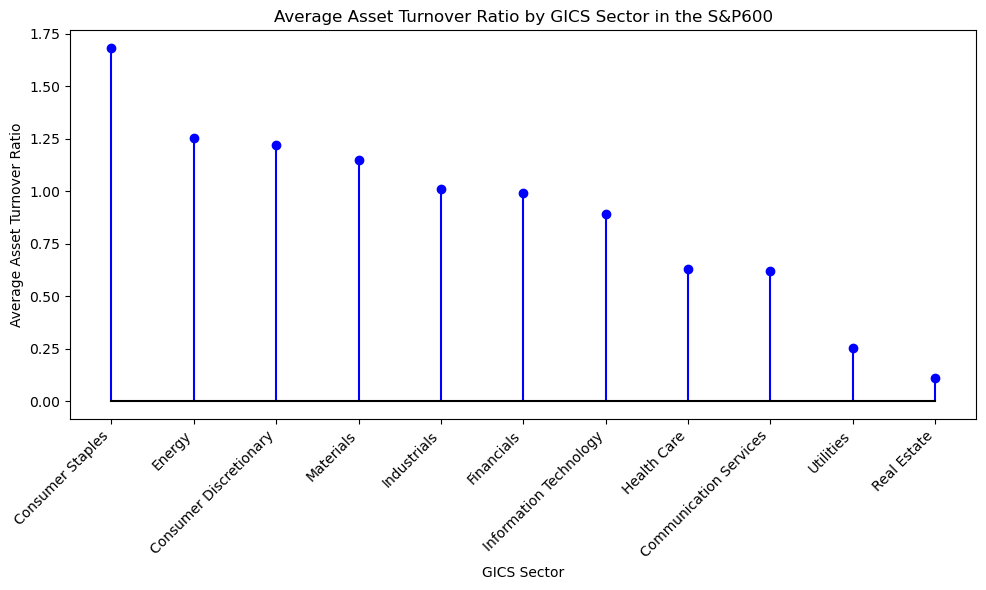
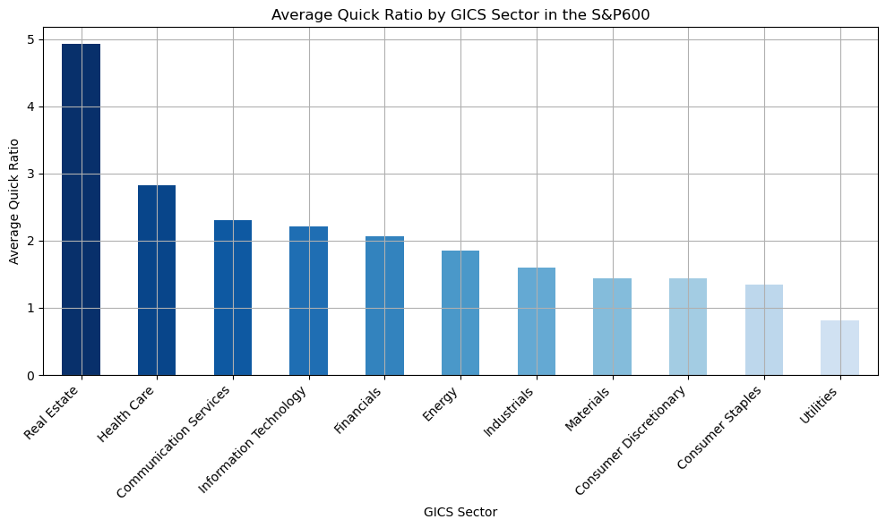
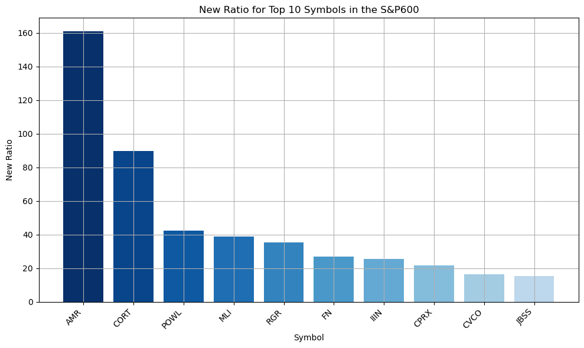

import requests
import pandas as pd
import yfinance as yf
pd.set_option('display.max_rows', None)
url = "https://en.wikipedia.org/wiki/List_of_S%26P_600_companies"
def read_html_from_website(url):
try:
# Send a GET request to the URL
response = requests.get(url)
# Check if request was successful
if response.status_code == 200:
# Extract HTML content from the response
html_content = response.text
return html_content
else:
print("Failed to retrieve HTML. Status code:", response.status_code)
return None
except Exception as e:
print("An error occurred:", e)
return None
# # # Create
html_content = read_html_from_website(url)
list_df = pd.read_html(html_content)
df = list_df[0]
df = df.drop(columns=["SEC filings","CIK"])
df = df.dropna()
#df = df.head(20)
df# Iterate through each row using iterrows()
for index, row in df.iterrows():
ticker = row['Symbol'] # Extract ticker from the current row
# Get financial data using yfinance
ticker_obj = yf.Ticker(ticker)
try:
# Get desired financial information
total_assets = ticker_obj.balance_sheet.T['Total Assets'].iloc[0]
total_debt = ticker_obj.balance_sheet.T['Total Debt'].iloc[0]
total_revenue = ticker_obj.income_stmt.T['Total Revenue'].iloc[0]
net_income = ticker_obj.income_stmt.T['Net Income'].iloc[0]
current_liabilities = ticker_obj.balance_sheet.T['Current Liabilities'].iloc[0]
current_assets = ticker_obj.balance_sheet.T['Current Assets'].iloc[0]
inventory = ticker_obj.balance_sheet.T['Inventory'].iloc[0]
# Check for incomplete data
if any(pd.isnull(value) for value in [total_assets, total_debt, total_revenue, net_income, current_liabilities, current_assets, inventory]):
print(f"{ticker} removed from df: Incomplete data")
df = df[df['Symbol'] != ticker] # Remove ticker from DataFrame
continue # Skip to the next iteration if data is incomplete
# Calculate derived metrics
debt_ratio = total_debt / total_assets
calculated_profit_margin = net_income / total_revenue
asset_turnover_ratio = total_revenue / total_assets
liquidity_ratio = current_assets / current_liabilities
quick_ratio = (current_assets - inventory) / current_liabilities
new_ratio = calculated_profit_margin * asset_turnover_ratio * liquidity_ratio / (debt_ratio * quick_ratio)
# Add calculated metrics to DataFrame
df.loc[index, 'Total Assets'] = total_assets
df.loc[index, 'Total Debt'] = total_debt
df.loc[index, 'Debt Ratio'] = debt_ratio
df.loc[index, 'Total Revenue'] = total_revenue
df.loc[index, 'Net Income'] = net_income
df.loc[index, 'Inventory'] = inventory
df.loc[index, 'Calculated Profit Margin'] = calculated_profit_margin
df.loc[index, 'Asset Turnover Ratio'] = asset_turnover_ratio
df.loc[index, 'Current Liabilities'] = current_liabilities
df.loc[index, 'Current Assets'] = current_assets
df.loc[index, 'Liquidity Ratio'] = liquidity_ratio
df.loc[index, 'Quick Ratio'] = quick_ratio
df.loc[index, 'New Ratio'] = new_ratio
except KeyError:
print(f"Error: Missing data for ticker {ticker}")
df = df[df['Symbol'] != ticker]
# Print or save the updated DataFrame
df
# df.to_csv("updated_financial_data.csv", index=False)
# Example to save as CSV#import yfinance as yf
#ticker_object = yf.Ticker('AAON')
#balancesheet = ticker_object.balance_sheet
#print(balancesheet)#pd.set_option('display.max_rows', None)import matplotlib.pyplot as plt
import numpy as np
# Define color palette for more variety
num_sectors = len(df['GICS Sector'].unique())
colors = plt.cm.Blues(np.linspace(1, 0.2, num_sectors))
# Plot Debt ratio graph
plt.figure(figsize=(10, 6))
sector_avg_debt_ratio = df.groupby('GICS Sector')["Debt Ratio"].mean().sort_values(ascending=True)
sector_avg_debt_ratio.plot(kind='bar', color=colors[:len(sector_avg_debt_ratio)])
plt.title("Average Debt Ratio by GICS Sector in the S&P600")
plt.xlabel('GICS Sector')
plt.ylabel("Average Debt Ratio")
plt.xticks(rotation=45, ha='right')
plt.grid(True)
plt.tight_layout()
plt.savefig('plot_debt_ratio.png')
# Plot liquidity ratio graph
plt.figure(figsize=(10, 6))
sector_avg_liquidity = df.groupby('GICS Sector')["Liquidity Ratio"].mean().sort_values(ascending=False)
sector_avg_liquidity.plot(kind='bar', color=colors[:len(sector_avg_liquidity)])
plt.title("Average Liquidity Ratio by GICS Sector in the S&P600")
plt.xlabel('GICS Sector')
plt.ylabel("Average Debt Ratio")
plt.grid(True)
plt.xticks(rotation=45, ha='right')
plt.tight_layout()
plt.savefig('plot_liquidity_ratio.png')
# Plot profit margin graph
plt.figure(figsize=(10, 6))
sector_avg_profit = df.groupby('GICS Sector')["Calculated Profit Margin"].mean().sort_values(ascending=False)
# Extracting x and y values for scatter plot
x = range(len(sector_avg_profit))
y = sector_avg_profit.values
plt.scatter(x, y, color='blue') # Scatter plot instead of line plot
plt.title("Average Profit Margin by GICS Sector in the S&P600")
plt.xlabel('GICS Sector')
plt.ylabel("Average Profit Margin")
plt.xticks(x, sector_avg_profit.index, rotation=45, ha='right') # Using sector names as x ticks
plt.grid(True)
plt.tight_layout()
plt.savefig('plot_profit_margin.png')
plt.figure(figsize=(10, 6))
sector_avg_turnover = df.groupby('GICS Sector')["Asset Turnover Ratio"].mean().sort_values(ascending=False)
plt.stem(sector_avg_turnover, linefmt='b-', markerfmt='bo', basefmt='k-', use_line_collection=True) # Using stem plot
plt.title("Average Asset Turnover Ratio by GICS Sector in the S&P600")
plt.xlabel('GICS Sector')
plt.ylabel("Average Asset Turnover Ratio")
# Using actual GICS sector column names as x-axis labels
plt.xticks(range(len(sector_avg_turnover)), sector_avg_turnover.index, rotation=45, ha='right')
plt.tight_layout()
plt.savefig('plot_asset_turnover_ratio.png')
# Plot quick ratio graph
plt.figure(figsize=(10, 6))
sector_avg_quick = df.groupby('GICS Sector')["Quick Ratio"].mean().sort_values(ascending=False)
sector_avg_quick.plot(kind='bar', color=colors[:len(sector_avg_quick)])
plt.title("Average Quick Ratio by GICS Sector in the S&P600")
plt.xlabel('GICS Sector')
plt.ylabel("Average Quick Ratio")
plt.xticks(rotation=45, ha='right')
plt.grid(True)
plt.tight_layout()
plt.savefig('plot_quick_ratio.png')
sorted_df = df.sort_values(by='New Ratio', ascending=False)
# Create a new DataFrame with only the top 10 entries
top_10_df = sorted_df.head(10)
# Plot new ratio graph
plt.figure(figsize=(10, 6))
plt.bar(top_10_df['Symbol'], top_10_df['New Ratio'], color=colors[:len(sector_avg_quick)]) # Using bar plot
plt.title("New Ratio for Top 10 Symbols in the S&P600")
plt.xlabel('Symbol')
plt.ylabel("New Ratio")
plt.xticks(rotation=45, ha='right')
plt.grid(True)
plt.tight_layout()
plt.savefig('plot_new_ratio.png')
plt.show() # Optional to display the plotC:\Users\tom77\AppData\Local\Temp\ipykernel_34780\2344064776.py:55: MatplotlibDeprecationWarning: The 'use_line_collection' parameter of stem() was deprecated in Matplotlib 3.6 and will be removed two minor releases later. If any parameter follows 'use_line_collection', they should be passed as keyword, not positionally.
plt.stem(sector_avg_turnover, linefmt='b-', markerfmt='bo', basefmt='k-', use_line_collection=True) # Using stem plot





